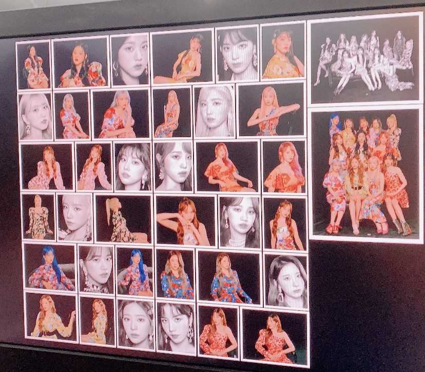

자꾸 잠을 못자게 하네요.. 우리 때문에 너 또한 못자겠죠 ? 진짜 고마워요 어제도 오늘도 매일매일 행복하게 만들어 줘서 고마워요 사실 어제도 울고 오늘도 울었어요 이건 비밀인데 너무 기쁘니까 말해주는거야 알겠죠
너는 내 눈물 버튼 이니까요 .............................화장두번 받았잖아..ㅎㅎㅎㅎㅎㅎㅎㅎㅎㅎㅎㅎㅎㅎㅎㅎㅎㅎㅎㅎㅎㅎㅎㅎㅎㅎㅎㅎㅎ왜 울려요....ㅎㅎㅎㅎㅎㅎㅎㅎㅎㅎㅎㅎㅎㅎㅎ마지막은 개그로 ㅎㅎㅎㅎ히.....
그냥 솔직하게 말할게요 ...위즈원만 있으면 다 괜찮아요 다 버틸수있고 다 다 괜찮으니까 걱정하지마요 갑자기 또 슬퍼...막 마음이가 슬펐다가 행복했다가 좋았다가 막 뭉클해졌다가 하루에도 12번 바뀌네요 ...에구 너무 좋아서 그래 ㅎㅎㅎ ㅠㅠㅠ
진심으로 고맙고 감사합니다 위즈원 덕분에 우리 아이즈원이 존재합니다 사랑합니다 정말 많이 .
｡ﾟ(ﾟ´ω`ﾟ)ﾟ｡
ねむれませんでした。
みのるはなきました。
ありがとうございます。
WIZONEあいしてます。
｡ﾟ(ﾟ´ω`ﾟ)ﾟ｡
